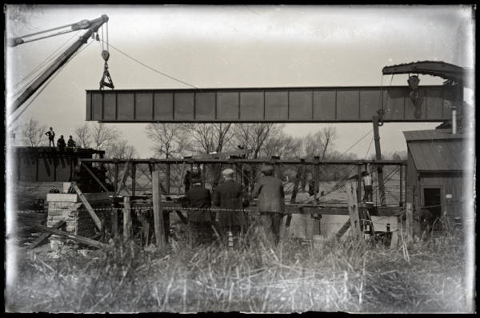

The Hagley Digital Archives is currently offline due to a sustained bot attack. Our support team reports that "bots have accelerated to levels not previously seen," as AI systems increasingly target sites like ours to train machine learning models.
We are actively migrating to a new platform that will address this issue, but it is not ready for launch. Although we've worked to keep the current site running during this transition, maintaining both the migration and the existing platform is not sustainable. We hope to have the new site up and running in June.
We sincerely apologize for the inconvenience and appreciate your patience. If you have any questions, please contact us at research@hagley.org.
Construction of a bridge. 1930~. Locomotives and views of Mauch Chunk contact photographs and negatives (Accession 1969-092).